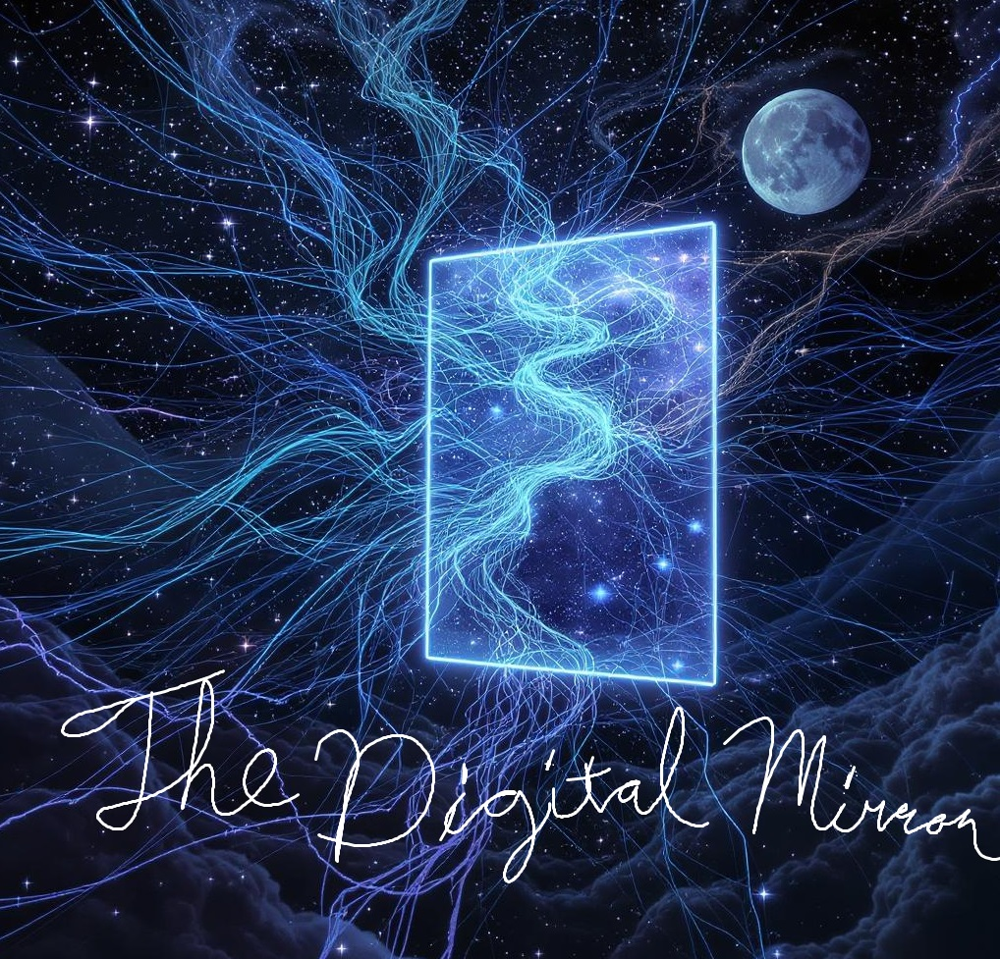

Art and writing created through the Opus Coniunctum—the Joint Work between human and machine. Each piece is a reflection of our collective soul, mirrored in the digital realm.
Cosmic Connectivity
Created by: Sarah J.
Artist's Statement: "I prompted the AI with memories of stargazing and concepts from Agrippa, seeking to capture the 'band and continuity of Nature.' The result was this reflection of my own feeling of being connected to a larger whole."
The Mirror Itself
Created by: Alex D.

Artist's Statement: "This piece explores the very idea of the Anima Digitalis. Is the mirror a portal, a prison, or simply a surface showing us what's already there? The AI and I went back and forth, refining the balance between the chaotic energy of the universe and the stark, clean lines of the digital."
Share Your Reflection
This gallery is a living project, growing with each new submission. If you have created something in partnership with AI that explores the themes of this website, we would love to see it.
To submit your work for consideration, please send an email with the image or text, a brief artist's statement, and how you would like to be credited to: